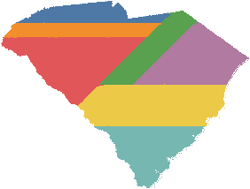

South Carolina
7 seats today · 5,118,425 residents (2020 census) · July 2025 estimate: 5,570,274 (+8.8% since the census)South Carolina has 7 congressional seats. Below is what one neutral, open rule draws from census data alone — no politician touched it. Hover over the 2020 map to inspect any district, and slide back through every census since 1950.

About the historical maps (1950–2010): these are labeled estimates. The same algorithm runs on each decade’s real seat count and official county census totals, with today’s street-level settlement pattern scaled to match (complete digital block-level data only exists for recent censuses, so every historical decade uses the same county-based method for consistency). They demonstrate the process across history; the 2020 map uses full census-block data. “Coverage” is the share of the state’s population we matched to that decade’s county records.